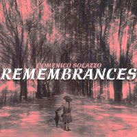

| Artist: | Domenico Solazzo |
| Title: | Remembrances |
| Label: | After Z Productions/LAP Recordings LAP 0507 |
| Length(s): | 51 minutes |
| Year(s) of release: | 2005 |
| Month of review: | [09/2005] |
| 1) | Farewell | 4.48 |
| 2) | The Promise | 3.19 |
| 3) | The Queen Song | 5.28 |
| 4) | The Love Of Hate | 4.29 |
| 5) | L.I.F.E. (Stands For Low Interest For Existence) | 6.47 |
| 6) | The Hatred Of Love | 7.30 |
| 7) | The Situation Speaks For Itself | 4.21 |
| 8) | The Battle Within | 4.28 |
| 9) | Welcome | 9.59 |
The Promise continues this style, but this time Solazzo sings along, in a whispering voice. The melodies is hardly audible, and Solazzo is not a great singer, but singing 'naked' as he is, it does add to the atmosphere. His vocals can be likened to those of Pal Sovik of Fruitcake. The song also has plenty of weird sounds, some of the might be bass, the others are vocal sounds.
With The Queen Song we go back to solo piano. Hey, where's the hiss? Was it an artefact of the opening song. This song is somewhat waltzy, rather minimalistic musically, comparable to say David Sylvian. The vocals are also better sounding. There is a certain Crimson/Present feel when the music becomes a bit louder and faster. Parts of the music sound quite mechanical here, but the ghost of Present is clearly ehm present. This is rowdy, scary stuff. Very good. The final part is back to the beginning, but fuller, rounder. This time there are some synth strings in the back. Interesting track. One of the best things I have heard Solazzo do.
On The Love Of Hate the vocals are not easy to discern. They vaguely follow the strumming, spacey electric guitar. Halfway, some disjointed keyboards set in. Rather Neu! like this. At the end, the percussion runs off with the track. L.I.F.E. (Stands For Low Interest For Existence) has majestic keyboards in the back, and noisy spoken samples in the front (taken from the movie Lost In Translation), it makes me wonder what comes next. What comes next is in the best of David Sylvian style. The vocal melody is great, and the keys add to the atmosphere. Halfway, the music takes a 90 degree turn, washes of cymbals (not that well recorded, but who knows it may be on purpose), with a different vocal melody, and very loud.
The Hatred Of Love brings us back to basics. Easy going bass and acoustic guitar. The rain keeps pouring, the vocals are soft and low, the music repetitive, with a bit of Fender cropping here and there. Later on, a bit of string work sets in. The Situation Speaks For Itself continues the scarce acoustic guitar driven feel, although this time the music sounds more ehm natural (as in close to nature). Then the vocals set in again, even vaguer than before, while the acoustic guitars resorts to strumming. The final part is even rather up-beat and like atmospheric pop music.
The Battle Within does not bring anything new, except that is contains estranging vocal sounds and effects to put us off ease. And you might NOT want to crank the volume up, to hear the music better in view of the some of the outbursts that later. My ears are still ringing. Comparable to The Queen Song, this one has some hard electronic elements. I do like these dynamics by the way, in case you wondered. Welcome is the long closer of this album, almost ten minutes long. It is a relatively relaxed, somewhat bouncy affair. There is certainly no hurry here. There are some minor intrusions from keyboards, that get more prominent along the way. All in all, a bit industrial sounding.